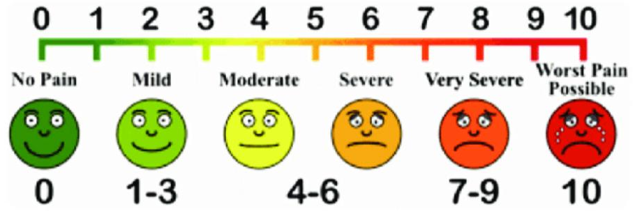

×
HAQ Scoring
The Health Assessment Questionnaire (HAQ) is a patient self-reported questionnaire that measures
the degree of difficulty experienced by the patient in eight functional areas: dressing/grooming, arising, eating,
walking, hygiene, reach, grip, and common daily activities. Each question is scored from 0 to 3, with 0 being no
difficulty and 3 being unable to perform the activity. The scores are then averaged to obtain the overall HAQ score.
Higher scores indicate more severe functional impairment.
VAS Scoring
The Visual Analog Scale (VAS) is a subjective measure of the patient's assessment of their pain,
disease activity, or other relevant symptom. The patient is asked to rate their symptom on a 100-mm horizontal line,
with 0 mm being no symptom or the best possible outcome and 100 mm being the worst possible symptom or outcome.

DAS28 Scoring
The Disease Activity Score 28 (DAS28) is a composite index used to assess disease activity in
rheumatoid arthritis. It includes the evaluation of tender joint count, swollen joint count, erythrocyte sedimentation
rate (ESR), and patient's global assessment of disease activity using a VAS. The DAS28 score ranges from 0 to 10,
with higher scores indicating higher disease activity.